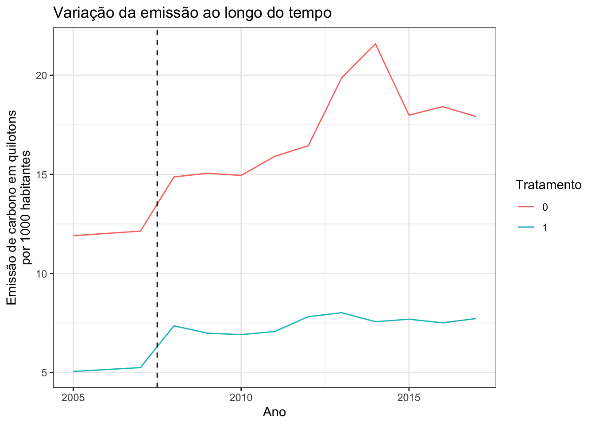
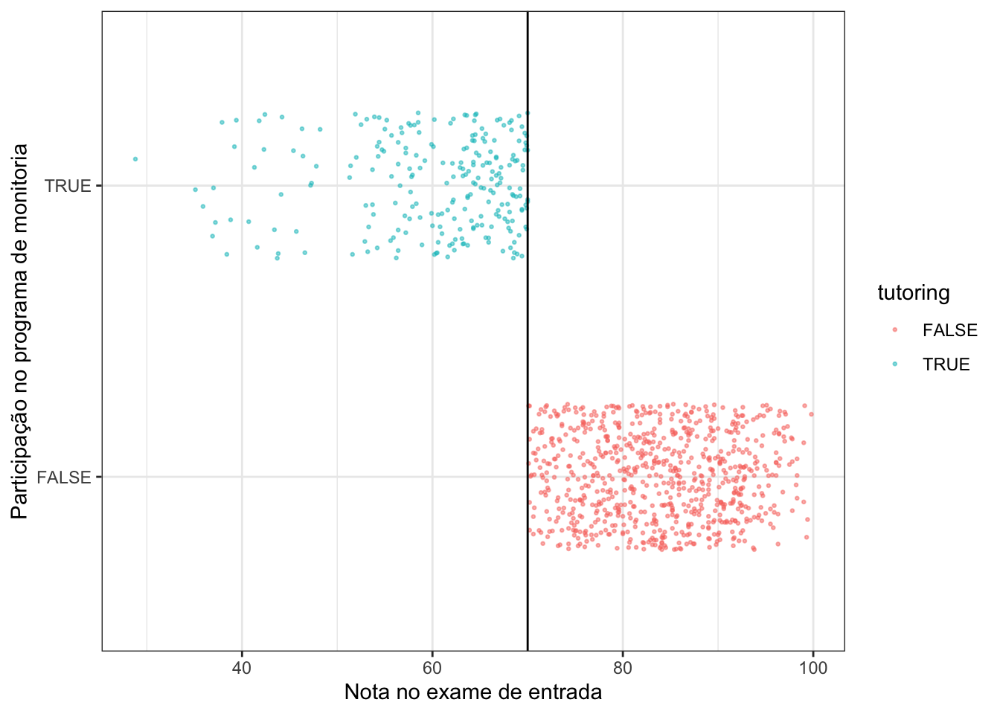
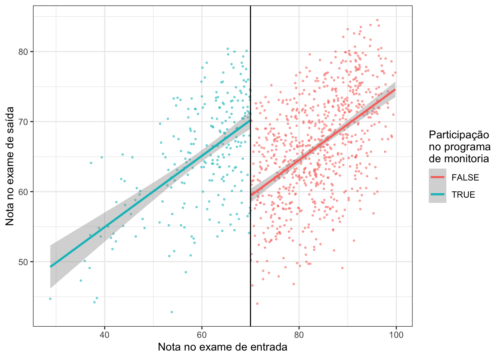
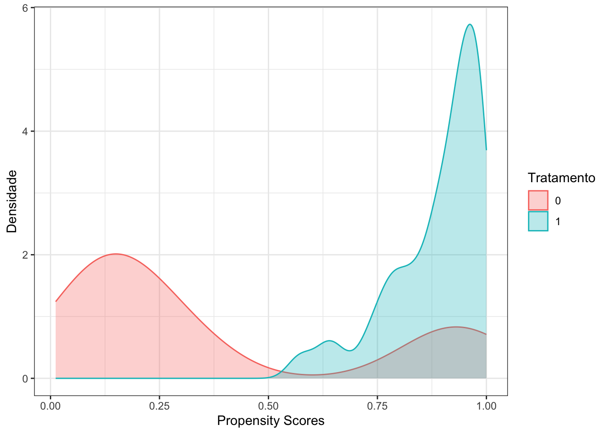

# Instale antes, se necessário: install.packages(c("tidyverse", "dataverse", "stargazer", "fixest"))
library(tidyverse)
library(dataverse)
library(stargazer)
library(fixest)Exercício de revisão — DiD, RDD e propensity score (solução)
1 Exercícios de Revisão
Pacotes a serem usados:
2 1 - Diff in Diff
Vamos replicar o estudo de Fraser et al, 2020, em que a técnica de Diferenças em Diferenças foi aplicada para entender como o processo de organização social de um município impacta a emissão de gás carbono.
3 Estrutura do Estudo
Teoria: A teoria subjacente sugere que comunidades com maior organização social têm maior capacidade de implementar práticas sustentáveis, políticas ambientais e ações coletivas que reduzem as emissões de carbono.
Dados: O estudo utilizou dados de cidades na região de Tóquio, classificando-as em dois grupos:
Alta capacidade de organização social (1)
Baixa capacidade de organização social (0)
Método: Foi utilizada a técnica de Diferenças em Diferenças (DiD), que é amplamente empregada para estimar efeitos causais ao longo do tempo, comparando mudanças em grupos tratados e não tratados antes e depois de uma intervenção ou evento.
| Nome | Descrição |
|---|---|
muni |
Nome do Municipio |
muni_code |
Código do Municipio |
year |
Ano |
counter |
Contagem do ano a partir de 2005 (0, 1,…,12) |
emissions |
Emissões de carbono (quilotons por 1.000 habitantes) |
treat |
Tratamento binário: 1 a partir do primeiro ano em que o município ficou acima da mediana de fin_str_index |
fin_str_index |
Índice de força financeira do município (versão contínua do tratamento) |
pop_density |
Densidade populacional |
income_per_capita |
Renda per capita |
pop_age_65_plus |
% de pessoas com 65 anos ou mais |
pop_college |
% com ensino superior completo |
value_agr_mill |
Produção agrícola em milhões de ienes por habitante |
value_manuf_mill |
Produção industrial em milhões de ienes por habitante |
value_commerce_mill |
Produção comercial em milhões de ienes por habitante |
Nota
Atenção: no código abaixo, o “tratamento” é construído a partir de fin_str_index, o índice de força financeira (capacidade fiscal) de cada município. Ao interpretar os resultados, lembre que essa é a medida usada aqui para “capacidade” do município; confira no artigo original como os autores definem e medem os conceitos.
Baixando os dados
# Importando o banco de dados do Harvard Dataverse
# (na primeira vez, baixa e salva uma cópia em dados/; depois, lê a cópia local)
arquivo_fraser <- "../dados/fraser_dataset.csv"
if (!file.exists(arquivo_fraser)) {
Sys.setenv("DATAVERSE_SERVER" = "dataverse.harvard.edu")
dat_bruto <- get_dataframe_by_name(
filename = "dataset.tab",
dataset = "10.7910/DVN/E8PEW7")
write_csv(dat_bruto, arquivo_fraser)
}
dat <- read_csv(arquivo_fraser, show_col_types = FALSE)
# Limpando as cidades
dat <- dat |>
# Selecionando apenas as cidades na região de Tokyo
dplyr::filter(pref == "Tokyo") |>
# Calculando a emissão de carbono em kilotons por 1000 residentes
mutate(emissions = emissions / pop * 1000) |>
# Calculando a densidade populacional
mutate(pop_density = pop / area_inhabitable) |>
# Criando uma contagem anual de 1, 2, 3, 4, etc.
mutate(counter = year - min(year)) |>
# Criando o tratamento: a cidade passa a ser tratada no primeiro ano em que fica
# acima da mediana de fin_str_index e continua tratada pelo resto do período
mutate(acima_mediana = fin_str_index > median(fin_str_index, na.rm = TRUE)) |>
arrange(muni_code, year) |>
group_by(muni_code) |>
mutate(treat = as.numeric(cummax(coalesce(acima_mediana, FALSE)))) |>
ungroup() |>
# Garantindo um fator para efeitos fixos
mutate(year = factor(year),
muni_code = factor(muni_code)) |>
# Selecionando apenas as variáveis de interesse:
select(
muni, # nome do município
muni_code, # código único de cinco dígitos para identificação de cada cidade
year, # ano
counter, # número de anos passados desde 2005 (0, 1, 2, ...),
emissions, # emissões em quilotons por 1.000 habitantes
treat, # Alta capacidade de organização (1/0)
fin_str_index, # capacidade governamental (numérica) e um conjunto de covariáveis que também podem influenciar as emissões, incluindo:
pop_density, # densidade populacional
income_per_capita, # renda per capita
pop_age_65_plus, # % de pessoas com 65 anos ou mais
pop_college, # % com ensino superior completo
value_agr_mill, # produção agrícola em milhões de ienes por habitante
value_manuf_mill, # produção industrial em milhões de ienes por habitante
value_commerce_mill # produção comercial em milhões de ienes por habitante
)
head(dat)3.1 Tarefas
1 - Faça o diagnóstico visual (por meio de um gráfico), da tendência paralela entre tratamento e controle
2 - Estime o efeito causal da organização social usando o estimador de Diferenças em Diferenças. Estime o modelo naive (sem controles) e interprete os resultados
3 - Reestime o modelo novamente, dessa vez inserindo os seguintes controles: Densidade Populacional, Renda per capita, % de pessoas com mais de 65 anos, % de pessoas com ensino superior, Produção agrícola, Produção industrial e Produção comercial. Interprete os resultados
3.2 Resolução
# Identificação de tendencias paralelas
dat |>
group_by(year,treat) |>
summarise(media = mean(emissions)) |>
mutate(treat = as.factor(treat),
year = as.character(year)) |>
mutate(year = as.numeric(year)) |>
ggplot(aes(x = year, y = media, group = treat, color = treat))+
geom_path()+
geom_vline(xintercept = 2007.5, linetype = "dashed")+
labs(title = "Variação da emissão ao longo do tempo", y = "Emissão de carbono em quilotons\npor 1000 habitantes", x = "Ano", color = "Tratamento")+
scale_x_continuous(breaks = c(2005, 2010, 2015))+
theme_bw()
Compare as trajetórias dos dois grupos. Atenção: neste exemplo não há uma única data de intervenção comum a todas as cidades (cada cidade passa a ser “tratada” no ano em que ultrapassa a mediana), então a linha vertical é apenas uma referência visual, e o diagnóstico de tendências paralelas é mais difícil do que no DiD clássico com dois períodos.
naive <- lm(emissions ~ treat * counter,
data = dat)
stargazer::stargazer(naive, type = "text")
===============================================
Dependent variable:
---------------------------
emissions
-----------------------------------------------
treat -5.697***
(1.918)
counter 0.701***
(0.237)
treat:counter -0.531*
(0.283)
Constant 11.769***
(1.508)
-----------------------------------------------
Observations 744
R2 0.083
Adjusted R2 0.079
Residual Std. Error 12.407 (df = 740)
F Statistic 22.329*** (df = 3; 740)
===============================================
Note: *p<0.1; **p<0.05; ***p<0.01Neste modelo, o coeficiente de treat:counter mede se as emissões das cidades tratadas evoluem de forma diferente (em inclinação) das cidades de controle ao longo do tempo. Ou seja, é um modelo de tendências diferenciais, e não o DiD clássico de dois grupos × dois períodos. Interprete o sinal e a significância desse coeficiente.
Sem incluir variáveis de controle, o modelo pode não isolar adequadamente o efeito do tratamento. Fatores como densidade populacional, renda per capita e composição demográfica podem estar correlacionados tanto com as emissões quanto com a probabilidade de uma cidade ser tratada, introduzindo viés nos coeficientes.
did <- lm(emissions ~ I(treat * counter) + treat + counter +
pop_density + income_per_capita + pop_age_65_plus + pop_college +
value_agr_mill + value_commerce_mill + value_manuf_mill,
data = dat)
stargazer::stargazer(did, type = "text")
===============================================
Dependent variable:
---------------------------
emissions
-----------------------------------------------
I(treat * counter) -0.884***
(0.165)
treat -3.461***
(1.091)
counter 1.085***
(0.145)
pop_density -0.067***
(0.008)
income_per_capita -0.001**
(0.001)
pop_age_65_plus -0.358***
(0.054)
pop_college 0.394***
(0.077)
value_agr_mill 18.889***
(3.288)
value_commerce_mill 0.078***
(0.003)
value_manuf_mill 0.724***
(0.131)
Constant 13.942***
(2.319)
-----------------------------------------------
Observations 744
R2 0.741
Adjusted R2 0.737
Residual Std. Error 6.629 (df = 733)
F Statistic 209.362*** (df = 10; 733)
===============================================
Note: *p<0.1; **p<0.05; ***p<0.01Se o coeficiente de I(treat * counter) for negativo e significativo, as cidades tratadas tiveram uma trajetória de emissões mais decrescente do que as de controle, mantidas constantes as covariáveis. Cuidado: as covariáveis variam no tempo e podem ter sido afetadas pelo próprio tratamento; nesse caso, controlar por elas pode distorcer o efeito.
Uma especificação de DiD mais adequada para tratamento que começa em anos diferentes é o modelo de efeitos fixos de duas vias (TWFE), com efeitos fixos de município (diferenças permanentes entre cidades) e de ano (choques comuns a todas), e erros-padrão clusterizados por município:
did_twfe <- feols(emissions ~ treat | muni_code + year,
cluster = ~ muni_code,
data = dat)
summary(did_twfe)OLS estimation, Dep. Var.: emissions
Observations: 744
Fixed-effects: muni_code: 62, year: 12
Standard-errors: Clustered (muni_code)
Estimate Std. Error t value Pr(>|t|)
treat -0.586683 0.382487 -1.53386 0.13023
---
Signif. codes: 0 '***' 0.001 '**' 0.01 '*' 0.05 '.' 0.1 ' ' 1
RMSE: 2.31379 Adj. R2: 0.964444
Within R2: 0.002079O coeficiente de treat estima a mudança média nas emissões quando a cidade passa a ser tratada, comparada com cidades ainda não tratadas no mesmo ano. Quando o momento de adoção varia e os efeitos mudam ao longo do tempo, mesmo o TWFE pode ser viesado; nesses casos, a literatura recente recomenda estimadores de DiD com adoção escalonada (por exemplo, Callaway e Sant’Anna, 2021).
4 2 - RDD
Nesse caso, seguiremos um exemplo hipotético criado por Andrew Heiss para aplicação de RDD. Vamos avaliar uma política de inserção de alunos em um programa de monitoria caso tenham tirado uma nota abaixo 70% no exame de entrada da disciplina. Assim, veremos o impacto da tutoria no exame final do curso. Os dados seguem o seguinte padrão:
| Nome | Descrição |
|---|---|
id |
ID do aluno |
entrance_exam |
Nota do exame de entrada |
exit_exam |
Nota do exame de saída |
tutoring |
Tratamento (Participação na monitoria) |
Baixando os dados
# Na primeira vez, baixa e salva uma cópia em dados/; depois, lê a cópia local
arquivo_tutoria <- "../dados/tutoring_program.csv"
if (!file.exists(arquivo_tutoria)) {
download.file('https://evalf20.classes.andrewheiss.com/data/tutoring_program.csv',
destfile = arquivo_tutoria)
}
dat2 <- read.csv(arquivo_tutoria)
head(dat2)4.1 Tarefas
1 - Faça o diagnóstico visual (por meio de um gráfico), para avaliar se o ponto de corte (elegibilidade ao programa) está claro
2 - Faça o diagnóstico visual (por meio de um gráfico), do efeito causal por meio de um gráfico, utilizando todos os casos
3 - Estime o tamanho do efeito causal da monitoria usando o estimador de Regressão com Descontinuidade. Estime o modelo naive (sem determinar uma janela) e interprete os resultados
4 - Reestime o modelo novamente, dessa vez filtrando para obter uma janela de pessoas que tiraram entre 60 e 80 porcento no exame de entrada (janela de 10 pontos). Compare com os resultados do modelo anterior, qual seria o melhor?
4.2 Resolução
dat2 |>
ggplot(aes(x = entrance_exam, y = tutoring, color = tutoring)) +
# Pontos pequenos, semitransparentes e espalhados verticalmente para melhor visualização
geom_point(size = 0.5, alpha = 0.5,
position = position_jitter(width = 0, height = 0.25, seed = 1234)) +
# Adicionando linha do tratamento
geom_vline(xintercept = 70) +
# Adicionando labels
labs(x = "Nota no exame de entrada", y = "Participação no programa de monitoria") +
theme_bw()
Pelo gráfico, vemos que o ponto de corte é seguido à risca (ninguém acima de 70 participa e todos abaixo participam), de modo que podemos aplicar uma RDD do tipo sharp.
dat2 |>
ggplot( aes(x = entrance_exam, y = exit_exam, color = tutoring)) +
geom_point(size = 0.5, alpha = 0.5) +
# Add a line based on a linear model for the people scoring 70 or less
geom_smooth(data = dplyr::filter(dat2, entrance_exam <= 70), method = "lm") +
# Add a line based on a linear model for the people scoring more than 70
geom_smooth(data = dplyr::filter(dat2, entrance_exam > 70), method = "lm") +
geom_vline(xintercept = 70) +
labs(x = "Nota no exame de entrada", y = "Nota no exame de saída", color = "Participação\nno programa\nde monitoria")+
theme_bw()
O gráfico indica uma descontinuidade do tratamento.
dat2 <- dat2 |>
# Centralizando a variável para o ponto de corte ser igual a zero
mutate(entrance_centered = entrance_exam - 70)
rdd <- lm(exit_exam ~ entrance_centered + tutoring,
data = dat2)
summary(rdd)
Call:
lm(formula = exit_exam ~ entrance_centered + tutoring, data = dat2)
Residuals:
Min 1Q Median 3Q Max
-19.9454 -4.3589 0.2841 4.7636 13.9700
Coefficients:
Estimate Std. Error t value Pr(>|t|)
(Intercept) 59.41083 0.44193 134.43 <2e-16 ***
entrance_centered 0.50977 0.02691 18.94 <2e-16 ***
tutoringTRUE 10.80044 0.80044 13.49 <2e-16 ***
---
Signif. codes: 0 '***' 0.001 '**' 0.01 '*' 0.05 '.' 0.1 ' ' 1
Residual standard error: 6.529 on 997 degrees of freedom
Multiple R-squared: 0.2685, Adjusted R-squared: 0.267
F-statistic: 183 on 2 and 997 DF, p-value: < 2.2e-16Os resultados apresentam um efeito significativo do tratamento: participar da monitoria aumenta, em média, cerca de 10,8 pontos a nota no exame final (escala de 0 a 100) para os alunos no ponto de corte.
dat2_10 <- dat2 |>
# Filtrando os casos para uma janela de 10 pontos
dplyr::filter(entrance_centered >= -10 &
entrance_centered <= 10)
rdd10 <- lm(exit_exam ~ entrance_centered + tutoring,
data = dat2_10)
stargazer::stargazer(rdd10, type = "text")
===============================================
Dependent variable:
---------------------------
exit_exam
-----------------------------------------------
entrance_centered 0.388***
(0.114)
tutoring 9.273***
(1.309)
Constant 60.377***
(0.752)
-----------------------------------------------
Observations 404
R2 0.162
Adjusted R2 0.158
Residual Std. Error 6.497 (df = 401)
F Statistic 38.891*** (df = 2; 401)
===============================================
Note: *p<0.1; **p<0.05; ***p<0.01O modelo apresentou novamente um efeito significativo, só que menor. Não há uma janela “certa”, mas a janela mais estreita tende a ser mais crível, porque é mais razoável supor que os alunos que tiraram entre 60 e 80 pontos sejam comparáveis do que todos os alunos, de 0 a 100. O custo é a perda de precisão (menos observações). Na prática, mostramos os resultados para várias janelas e usamos métodos de escolha automática, como rdrobust::rdrobust().
5 3 - Propensity Scores
Para finalizar nossa revisão, trabalharemos um pouco com propensity scores. Dessa forma, retornaremos ao banco de dados do exercício sobre Diferenças em Diferenças. Vamos reestimar o modelo, dessa vez usando Propensity Scores.
5.1 Tarefas
1 - Calcule o propensity score do tratamento (treat), utilizando como preditores os mesmos controles da tarefa 1.3
2 - Faça um gráfico de densidade com a probabilidade de atribuição do tratamento a partir dos propensity scores
3 - Reestime o modelo de diferenças em diferenças, só que aplicando os propensity scores no lugar dos controles. Interprete os resultados
5.2 Resolução
ps <- glm(treat ~ pop_density + income_per_capita + pop_age_65_plus +
pop_college +value_agr_mill + value_commerce_mill + value_manuf_mill,
data = dat, family = 'binomial')
dat$ps <- predict(ps,dat, type = 'response')
summary(dat$ps) Min. 1st Qu. Median Mean 3rd Qu. Max.
0.01178 0.73944 0.89209 0.76075 0.96027 1.00000 dat |>
ggplot(aes(x=ps, fill=as.factor(treat), colour=as.factor(treat))) +
geom_density(alpha=.3)+
labs(x = "Propensity Scores", y = "Densidade",
fill = "Tratamento", color = "Tratamento")+
theme_bw()
- Suporte comum: verifique se as distribuições dos escores se sobrepõem. Regiões sem sobreposição (especialmente com escores muito baixos ou muito altos) indicam unidades tratadas sem contrapartes comparáveis no grupo controle, e vice-versa.
did_ps <- lm(emissions ~ I(treat * counter) + treat + counter + ps,
data = dat)
summary(did_ps)
Call:
lm(formula = emissions ~ I(treat * counter) + treat + counter +
ps, data = dat)
Residuals:
Min 1Q Median 3Q Max
-13.137 -4.554 -2.907 -0.648 79.414
Coefficients:
Estimate Std. Error t value Pr(>|t|)
(Intercept) 16.7739 2.3366 7.179 1.72e-12 ***
I(treat * counter) -0.1548 0.3122 -0.496 0.62004
treat -3.3491 2.0855 -1.606 0.10873
counter 0.2726 0.2810 0.970 0.33222
ps -7.8961 2.8257 -2.794 0.00533 **
---
Signif. codes: 0 '***' 0.001 '**' 0.01 '*' 0.05 '.' 0.1 ' ' 1
Residual standard error: 12.35 on 739 degrees of freedom
Multiple R-squared: 0.0926, Adjusted R-squared: 0.08769
F-statistic: 18.85 on 4 and 739 DF, p-value: 8.994e-15Conclusão
Efeito do Tratamento:
Verifique se, após ajustar pelo escore de propensão, o coeficiente de
I(treat * counter)continua significativo. Se não for, não há evidência de que a trajetória de emissões das cidades tratadas seja diferente da das cidades de controle com probabilidade de tratamento parecida.Lembre que o escore só ajusta pelas covariáveis incluídas no modelo logit.
Importância dos Propensity Scores:
- Se o coeficiente de
psfor significativo, as características associadas à probabilidade de receber o tratamento (como densidade populacional e renda per capita) também estão associadas às emissões, o que confirma que elas são confundidores relevantes.
- Se o coeficiente de